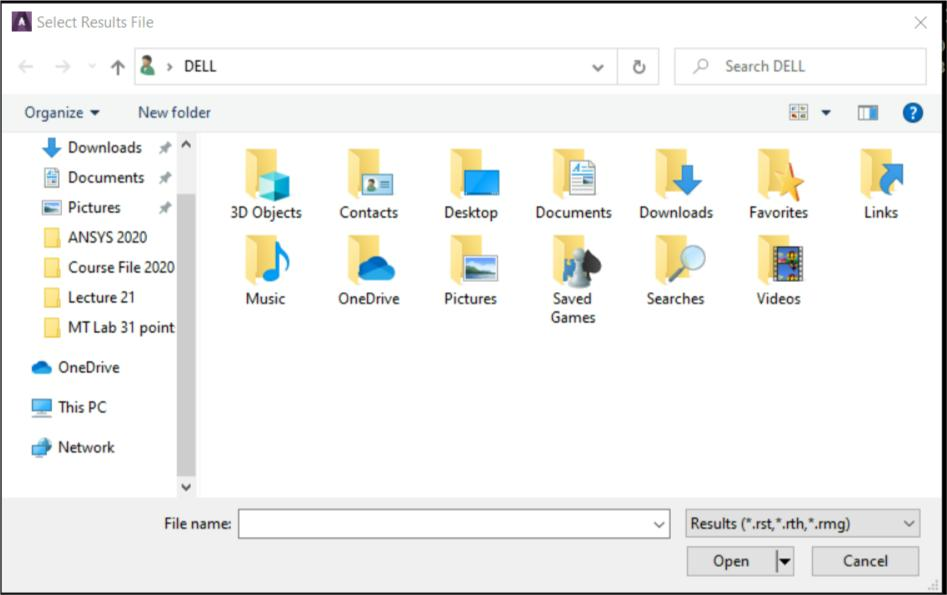

Use POST1, the general postprocessor, to review analysis results over the entire model, or selected portions of the model, for a specifically defined combination of loads at a single time. POST1 has many capabilities, ranging from simple graphics displays and tabular listings to more complex data manipulations such as load case combinations. Issue Main Menu> General Postproc to enter the general postprocessor.2.5.1 Reading Results Data into the Database The first step in POST1 is to read data from the results file into the database. Model data must exist in the database to do so. If the database does not already contain model data, issue Utility Menu> File> Resume Jobname.db to read the database file, Jobname.DB. The database should contain the same model for which the solution was calculated, including the element types, nodes, elements, element real constants, material properties, and nodal coordinate systems.2.5.2 Reviewing Results in POST1 Once the desired results data are stored in the database, the analyst can review them through graphics displays and tabular listings. In addition, s/he can map the results data onto a path.2.5.2.1 Displaying Results Graphically Graphics displays are perhaps the most effective way to review results. The following types of graphics can be displayed in POST1:
Contour displays
Deformed shape displays
Vector displays
Path plots
Reaction force displays
Particle flow traces
2.5.2.2 Listing Results in Tabular Form An effective way of documenting analysis results is to produce tabular listings in POST1. Listing options are available for nodal and element solution data, reaction data, element table data, and more. Listing Nodal and Element Solution Data Use Main Menu> General Postproc> List Results> Nodal Solution to list specified nodal solution data. Use Main Menu> General Postproc> List Results> Element Solution to list specified results for selected elements. Specify the ELEM option with PRESOL to obtain line element solution printout. The program will list all applicable element results for the selected elements. Listing Reaction Loads and Applied Loads There are several options in POST1 for listing reaction loads and applied loads. The GUI path Main Menu> General Postproc> List Results> Reaction Solu lists reactions at constrained nodes in the selected set. The GUI path Main Menu> General Postproc> List Results> Nodal Loads lists the summed element nodal loads for the selected nodes, except for any zero values. Another useful command is Main Menu> General Postproc> Nodal Calcs> Total Force Sum. It calculates and lists the force and moment summation for the selected set of nodes. Listing Element Table Data Use Main Menu> General Postproc> Element Table> List Elem Table or Main Menu> General Postproc> List Results> Elem Table Data to list specified data stored in the element table. Use Main Menu> General Postproc> Element Table> Sum of Each Item to list the sum of each column in the element table.2.5.2.3 Using the Results Viewer to Access Results File Data The Results Viewer (Fig. 2.16) is a compact toolbar for viewing the analysis results. Selecting the Results Viewer disables much of the standard GUI functionality. Many of these operations are not available because of PowerGraphics limitations. However, a good deal of the POST1 functionality is contained in the Result Viewer menu structure, and in the right and middle mouse button context sensitive menus that are accessible in the Results Viewer.

Fig. 2.16 The Results ViewerThe Results Viewer can be used to access any data stored in a valid results file (such as *.RST, *.RTH, and *.RMG). Because the viewer can access results data without loading the entire database file, it is an ideal location from which to compare data from many different analyses.